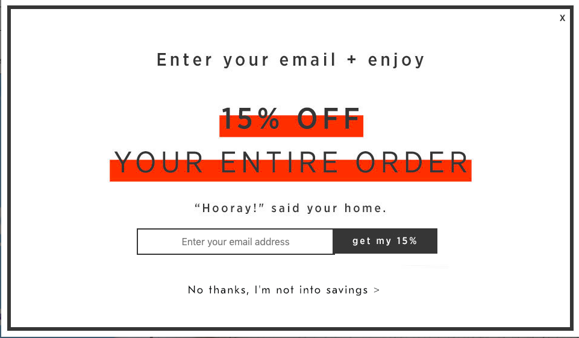
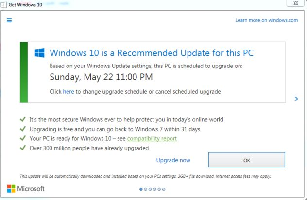

Dark Patterns is a term coined by Harry Brignull, to describe the various ways businesses trick users into doing something that they didn't mean to do (ie. creating a subscription). In some cases, these tricks also hinder users from doing what they want to do (ie. cancelling a subscription). These tricks are mainly applied through websites or apps.
This website explores the various types of dark patterns that businesses use as well as provide examples so that users can be well informed.
Below are some examples of dark patterns. There are many other examples and types of dark patterns that can be viewed here.
Have you ever tried deleting your Amazon account? Prior to 2020, to close your Amazon account you had to navigate through many links on the website in order to do so. Here is a video that illustrates how challenging it was to delete your Amazon account.
Creating an account, in comparison is much simplier. By entering your name, email, and setting a password, you can create an Amazon account. This design in which it is easy to enter the business (ie. creating an account), but hard to get out of (ie. cancelling a subscription) is what is known as a Roach Motel.
Click here to try out an example of a roach motel dark pattern.
Misdirection is when the design of something (ie. buttons) is done to purposefully get your attention on one things, in order to distract you from another. One classic example is the color of a button. Designers make the color of the button they want you to click on a bold or bright color, while leaving the other option a more netural background color.
This example of misdirection by Instagram tricks users into allowing Instagram to gain access of more of their person information. By making the button a bright blue color, it makes users more likely to select it.
By using confusing language, like double negatives, it creates confusion in the users and thereby tricking them into signing up for something they didn't mean to sign up for. This is most commonly seen in the checkboxes for email subscriptions.
An exmaple of a tricky question is shown below:
Similar to tricky questions, confirmshaming is phrasing of decline options that are in a way to shame the user into compliance. It is the act of guilting the user into something that they did not want. The most common form of confirmshaming is when sites ask you to sign up for newletters or promotions.
By using phrases like "No thanks, I'm not into savings" or "No, I'd like to pay full price", business trick users into feeling guilty about clicking the no option.
Bait and switch is when the user wants to do one thing, but a different, undesired thing actually occurs. One of the most famous example of a bait and switch was Microsoft's approach to having users upgrade their computers to Windows 10. In the photo below, this pop up was shown when Microsoft prompted it's users to switch. Most people who did not want to upgrade would click the "x" in the top right corner. Users might have assumed that they closed the pop up and have decided to not upgrade to Windows 10. However, in this specifc instance, closing the pop up by clicking the "x" actually meant "Yes, I do want to upgrade my computer to Windows 10."
Recently California has passed a regulation banning the use of dark patterns. This comes as an enforcement to the California Consumer Privacy Act (CCPA) passed in 2018. The CCPA gives Californians the right to say no to the sale of personal information. However, many state officials are worried that these options to say no will be difficult to navigate to, like Roach Motels. Therefore, by banning dark patterns, it allows California to ensure that their consumers are not "confused or misled when seeking to exercise their privacy rights."
The regulation does not ban all forms of dark patterns, only those that have "the substantial effect of subverting or impairing a consumer's choice to opt-out" of having their personal information sold. Tricky questions is an example of a dark pattern that would be banned as the regulations state that opt-out notices shall "use straightforward language and avoid technical or legal jargon". Businesses that are found to not be in compliance with the regulations are sent a "notice to cure" in which they are given 30 days to change their services accordingly.
Banning the use of dark patterns is gaining traction from both parties. In 2019, Senators Mark Warner(D-VA) and Deb Fischer(R-NE) introduced a bill banning tech firms from suing dark patterns. Rohit Chopra, the commissioner of the Federal Trade Commission (FTC) has spoken out against dark patterns as well. Moreover, recently the FTC held a virtual workshop examining dark patterns and their regulations.
In the recent FTC workshop on dark patterns, Mutale Nkonde, CEO of AI for the People, discusses the impact that dark patterns have on communities of color. The specific business she brought to light is Intuit's TurboTax. Turbotax is a software that consumers can use to file taxes, it is what helps bring Intuit profit. However, the IRS has stated that Intuit and other commercial tax prep companies must provide a free online filing system for Americans that earn below $66,000 a year. Therefore, Intuit launched their free edition of TurboTax.
Despite promising consumers who were low income free filing of their taxes and having the word "free" 5 times on their website, it was not actually the case. As Nkonde explains, someone who is a TaskRabbit cleaner and earns $29,000 annually needs to click through Intuit's "free" filing services 5 times before being told that they actually do not qualify for free filing because they are an independent contractor. This branding of Intuit's free edition of TurboTax is considered a dark pattern because it lets the user believe that they are getting a free service as the company claims when it is not the case.
This affects communities of color as the median houseshold income of Black Americans is $41,000, Latinx Americans is $51,000, and Native Americans is $48,000. Large percentages of these communities qualify for free filing of their taxes, but cannot actually file them for free, despite these "free" branded comapnies. Therefore, as Nkonde says, income becomes a proxy for race.
A recording of the FTC workshop can be found here.